Municipalidad Provincial de Ica · Área de Informática
Soporte Municipal
Sistema web para gestionar los pedidos de soporte técnico de toda la municipalidad: un solo flujo para el trabajador, el técnico y el jefe de informática.
Manual de usoTecnología y seguridadCosto–beneficio
Presentación del proyecto · 2026
El punto de partida · Antes
¿Cómo se pedía soporte hasta ahora?
El técnico atendía como podía: lo llamaban a cada rato, sin ningún orden, y muchas veces los propios trabajadores tenían que dejar su puesto e ir caminando hasta el área de informática.
📞Interrupciones constantes
Llamadas, mensajes y visitas al mismo tiempo. El técnico salta de un pedido a otro y pierde el hilo.
🧠"Se me olvidó"
Los pedidos quedaban en la memoria o en papelitos. Sin registro, algunos casos simplemente se perdían.
🚶Traslados innecesarios
El trabajador deja su oficina para reportar el problema en persona; el técnico también se desplaza sin saber qué encontrará.
🤷Sin orden ni prioridad
Atendía "el que insistía más". No había una cola justa por orden de llegada.
📷Sin evidencia
Nada de fotos del error ni del documento. El técnico llegaba a ciegas.
📊Sin indicadores
Imposible saber cuántos casos hubo, cuántos se resolvieron ni el rendimiento real del área.
La propuesta · Después
Una sola plataforma, un solo flujo
Todos los pedidos viven en una misma base de "solicitudes" compartida por tres roles. Cada quien ve lo que le toca y el caso avanza ordenadamente de principio a fin.
Trabajador
Crea su solicitud desde su sitio
→
Sistema
Forma una cola por orden de llegada
→
Técnico
"Atender ahora" y resuelve
→
Ambos
Doble confirmación: Resuelto
→
Jefe
Supervisa, mide y reporta
👤 Trabajador — pide ayuda y confirma🛠️ Técnico — atiende la cola📈 Jefe — controla todo
Manual · Trabajador (1 / 6)
Iniciar sesión
Abre la dirección del sistema en el navegador.
Escribe tu Usuario / Correo y tu Contraseña, entregados por el área de informática.
Pulsa Ingresar.
¿Olvidaste tu contraseña? Usa el enlace "¿Olvidaste tu contraseña?" para recuperarla con tu correo.
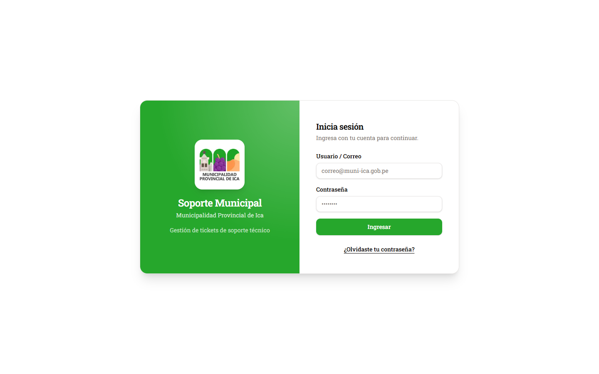
Manual · Trabajador (2 / 6)
Primer ingreso (solo la primera vez)
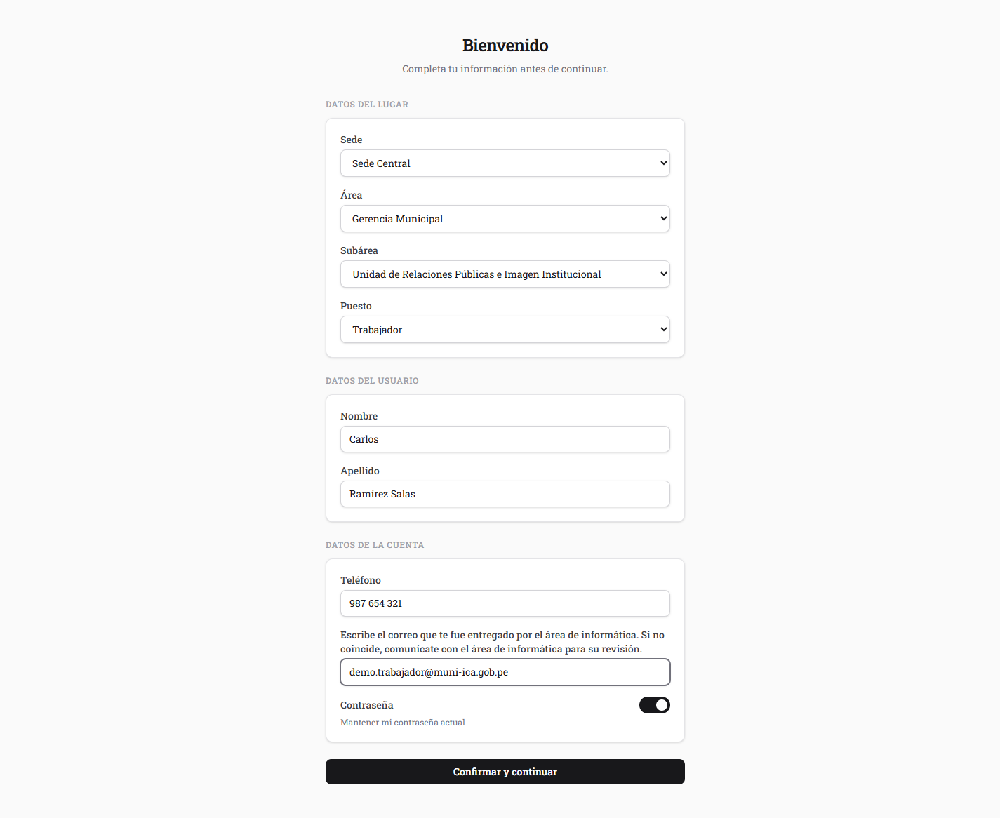
Datos del lugar: elige tu Sede → Área → Subárea → Puesto (se eligen en cascada).
Datos del usuario: escribe tu Nombre y Apellido.
Datos de la cuenta: registra tu Teléfono y tu Correo (debe coincidir con el entregado). Sirven para recuperar tu contraseña.
Si quieres, define una nueva contraseña; si no, mantienes la actual.
Pulsa Confirmar y continuar.
Manual · Trabajador (3 / 6)
Crear una solicitud de ayuda
En "Tus datos" verás tu ubicación, cargada automáticamente.
Elige el Tipo de ayuda: Presencial o Virtual.
Si es Virtual, escribe tu Código AnyDesk para que el técnico te asista de forma remota.
Pon un Título y, si deseas, una Descripción del problema.
Adjunta imágenes (se comprimen, máx. 1 MB) o PDF (máx. 3 MB): por ejemplo, una foto del error.
Pulsa Enviar Solicitud.
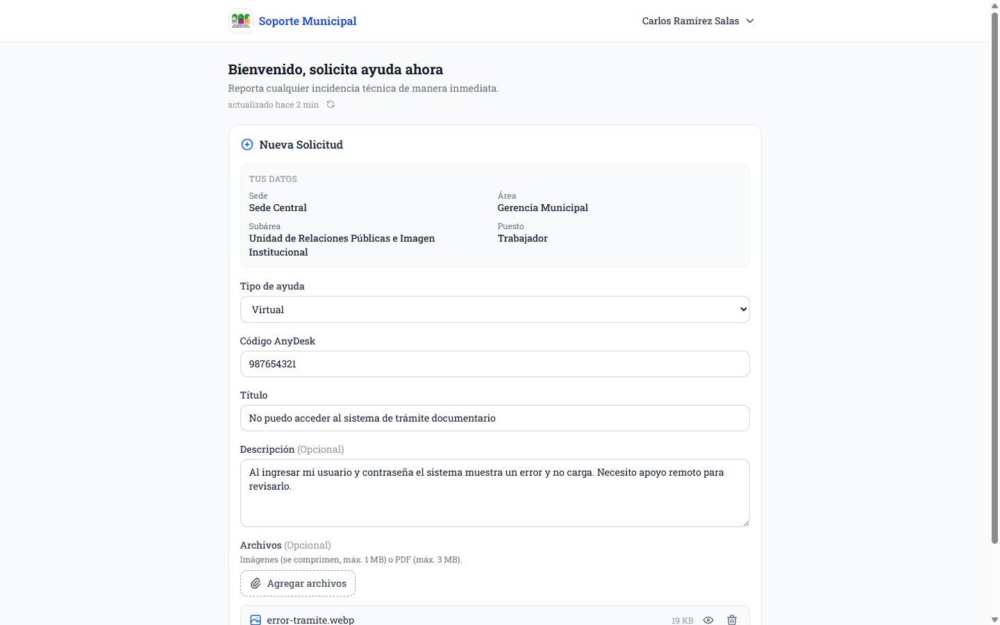
Solicitud virtual: campo de AnyDesk y archivo adjunto comprimido.
Manual · Trabajador (4 / 6)
Sigue tu solicitud en la cola
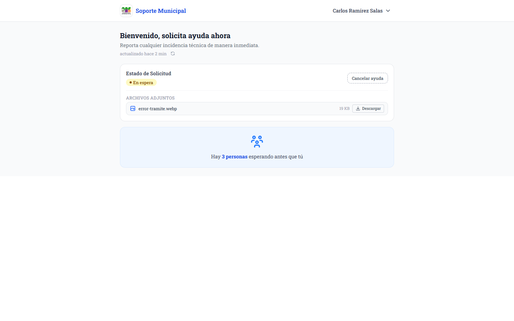
El estado de tu solicitud aparece como En espera.
El sistema te dice cuántas personas hay antes que tú en la cola.
Mientras esté en espera, puedes "Cancelar ayuda" si ya no la necesitas.
Tus archivos adjuntos quedan visibles para el técnico.
Manual · Trabajador (5 / 6)
Confirma si se resolvió
Cuando un técnico toma tu caso, el estado pasa a En proceso y ves quién te está atendiendo.
Al terminar, el sistema te pregunta "¿Se ha resuelto el problema?".
Responde Resuelto o No resuelto.
El caso se cierra como Solucionado solo cuando tú y el técnico confirman: es la doble confirmación.
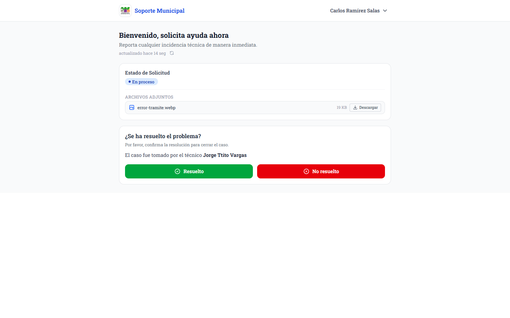
Manual · Trabajador (6 / 6)
Tu perfil y cerrar sesión
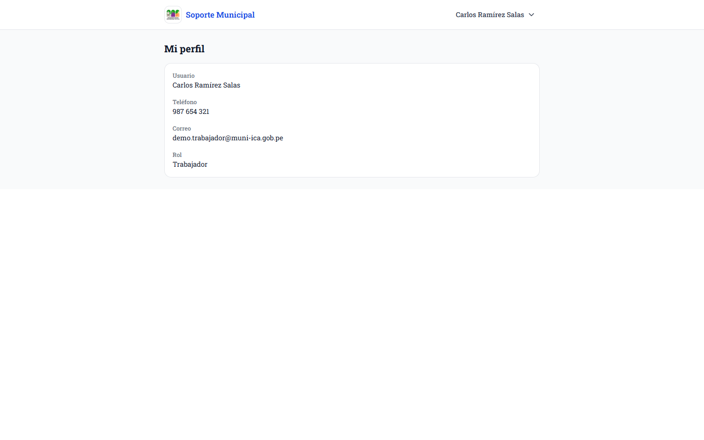
Mi perfil
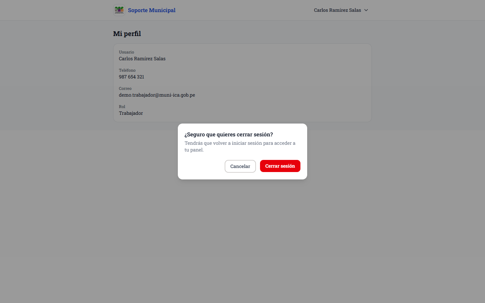
Cerrar sesión seguro
Desde el menú con tu nombre (arriba a la derecha) entra a "Perfil" para ver tus datos.
Usa "Salir sesión" y confirma para cerrar de forma segura cuando termines.
El técnico · ¿Qué hace?
Cola de espera y disponibilidad
Ve sus métricas del día: Esperando y Finalizadas hoy.
Cambia su estado: Disponible · En Oficina · Virtual · Descanso.
La "Cola de Espera" lista los pedidos por orden de llegada, con los datos del trabajador.
Con Atender ahora toma un caso. Es atómico: si otro técnico lo tomó primero, el sistema avisa.
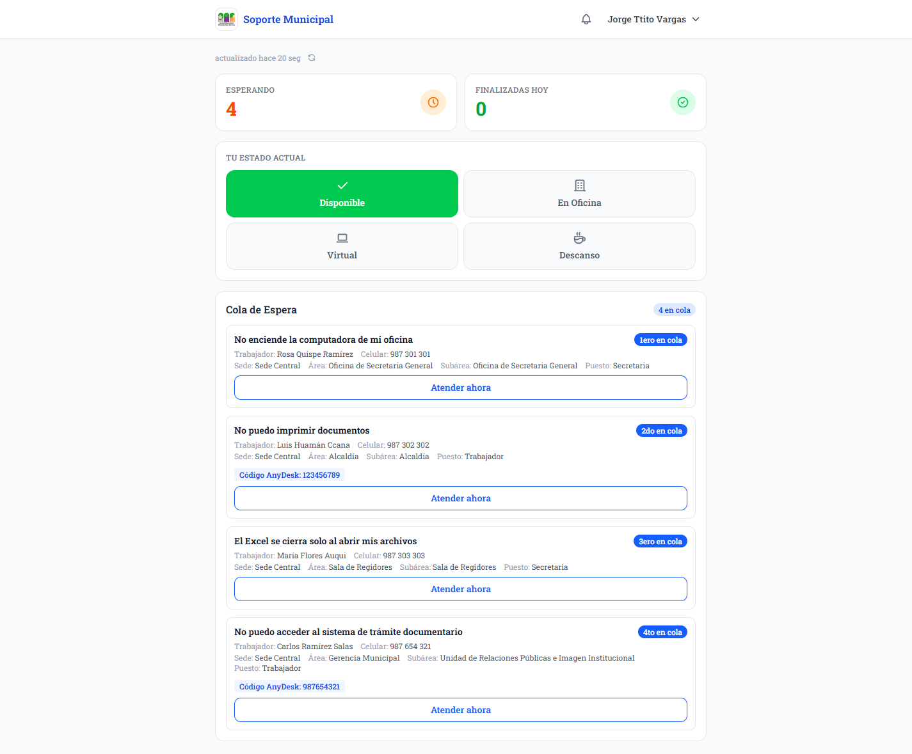
El técnico · ¿Qué hace?
Atender y cerrar un caso
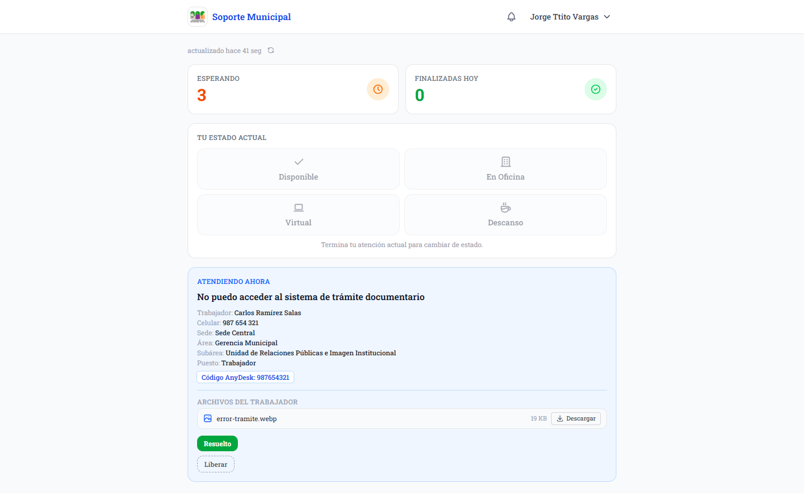
En "Atendiendo ahora" ve todos los datos del trabajador, su Código AnyDesk y sus archivos.
Resuelve el problema, presencial o de forma remota.
Pulsa Resuelto, o Liberar para devolver el caso a la cola.
El caso se cierra cuando técnico y trabajador confirman (doble confirmación). Al terminar, vuelve a Disponible.
El jefe de informática · Su poder
Tablero de control en vivo
KPIs del día: Esperando ayuda, Solucionados hoy (con % de tasa de éxito) y No solucionados (escalamiento).
Estado de Técnicos en vivo: qué hace cada técnico (Disponible, Atendiendo, En Oficina, Virtual, Descanso).
Ve a quién está ayudando cada técnico y desde hace cuánto ("última actualización hace X").
Todo se refresca solo, sin recargar la página.
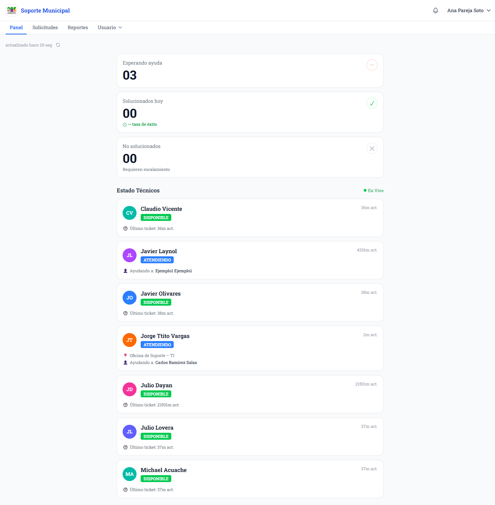
El jefe de informática · Su poder
Control total de las solicitudes
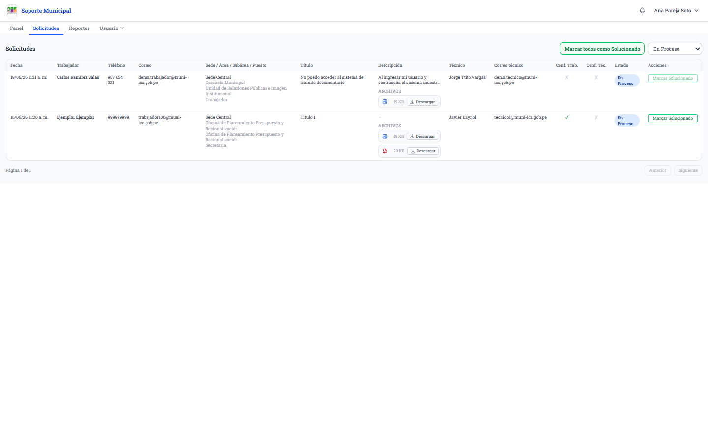
Ve todas las solicitudes y las filtra por estado (en espera, en proceso, solucionado, etc.).
Revisa las confirmaciones del trabajador y del técnico de cada caso.
Puede Marcar Solucionado o Cancelar una solicitud cuando corresponde.
Acción masiva para cerrar varios casos a la vez.
El jefe de informática · Su poder
Reportes mensuales en PDF
Descarga el reporte del mes en curso (del día 1 hasta hoy).
Genera y descarga los meses anteriores en PDF.
Cada reporte trae el resumen y el listado de solicitudes solucionadas y no solucionadas.
Ideal para informes de gestión y auditoría del área.
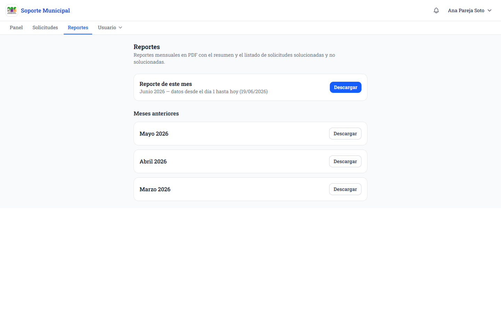
El jefe de informática · Su poder
Crea las cuentas del personal
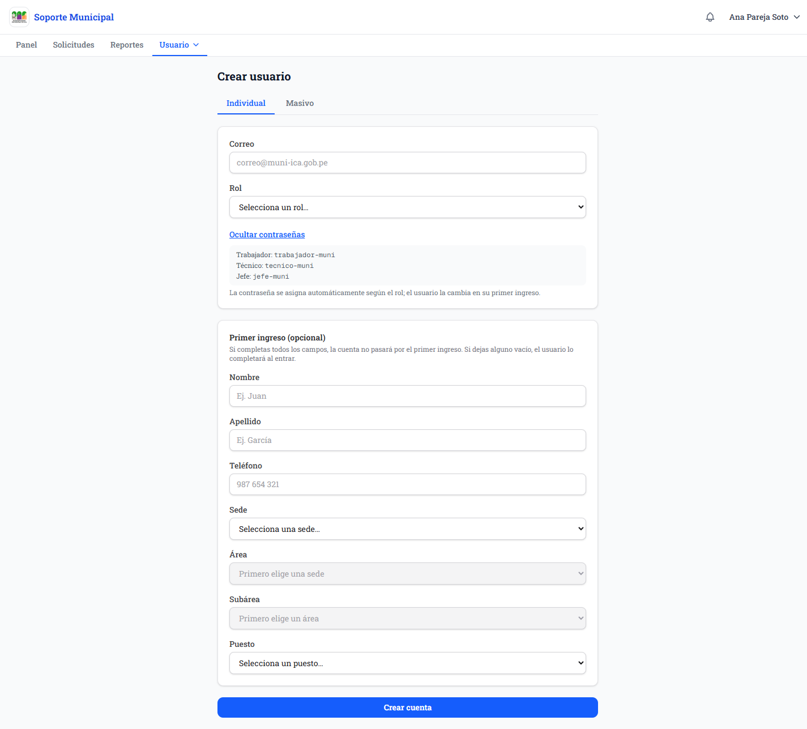
Crea cuentas una por una o de forma masiva (lista de correos).
Asigna el rol: Trabajador, Técnico o Jefe de informática.
La contraseña se asigna según el rol; el usuario la cambia en su primer ingreso.
Puede dejar listo el primer ingreso para que el usuario entre directo.
El jefe de informática · Su poder
Edita, restablece y da de baja
Busca por nombre o filtra por sede; muestra activos y desactivados.
Edita nombre, teléfono, ubicación y cambia el rol de cualquier usuario.
Restablece la contraseña a la del rol con un clic.
Desactiva o reactiva cuentas. El sistema protege al último jefe activo.
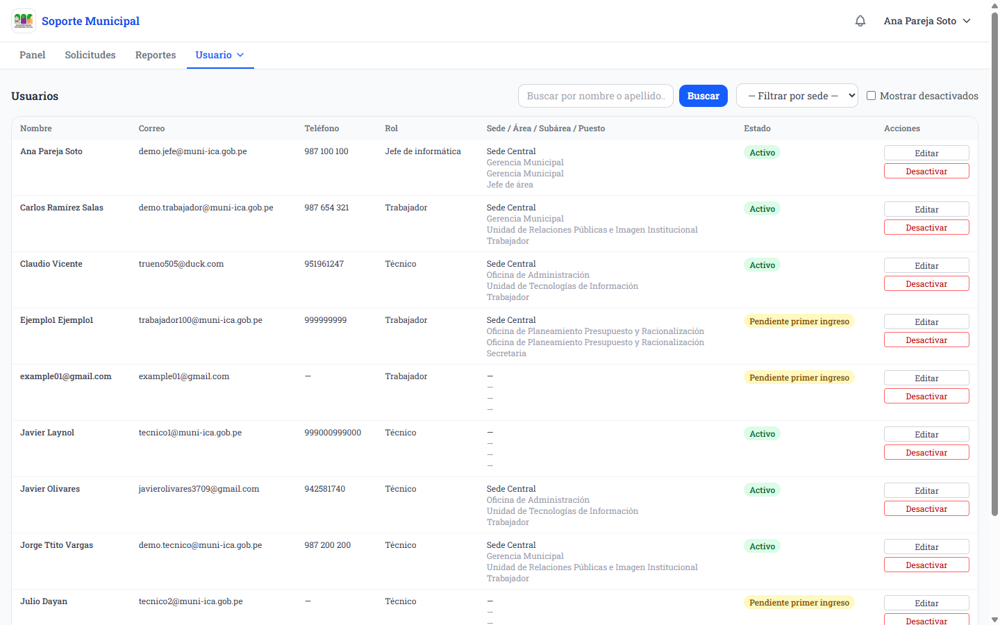
Buscar y filtrar · editar · cambiar rol · restablecer contraseña · activar/desactivar.
Cómo está construido
Tecnologías utilizadas
Tecnología moderna, estándar de la industria y de bajo costo de operación. Un solo backend administrado, sin servidores propios que mantener.
⚛️Frontend
Next.js 16.2.7 (App Router)
React 19.2.4
TypeScript 5
🎨Interfaz
Tailwind CSS v4
shadcn/ui + Radix
Íconos Tabler
🗄️Backend — Supabase
Base de datos PostgreSQL
Autenticación y seguridad (RLS)
Almacenamiento de archivos
📄Reportes
PDF con jsPDF
Tablas con jspdf-autotable
Generación mensual automática
🔄Actualización en vivo
Refresco por polling
Se pausa si la pestaña está oculta
Simple y económico (decisión de MVP)
✅Calidad
ESLint 9
Pruebas E2E con Playwright
Migraciones de base versionadas
Protección de la información
Políticas de seguridad
La seguridad no depende de una sola barrera: el acceso se valida en varias capas y la base de datos siempre tiene la última palabra.
🛡️Acceso por rol, en capas
Primero el enrutamiento por rol; luego, cada acción del servidor verifica el rol en la base de datos (no en el navegador). El navegador nunca decide los permisos.
🔒RLS en PostgreSQL
La seguridad a nivel de fila es la capa definitiva: cada usuario solo ve y escribe lo que su rol permite. El trabajador ve sus solicitudes; el técnico y el jefe, las que les corresponden.
🔑Llaves separadas
Tres accesos distintos a los datos. La llave con más privilegios (service_role) vive solo en el servidor y jamás llega al navegador.
🧾Validación y unicidad
Se validan correo, teléfono, código AnyDesk y longitudes. Un trabajador no puede tener dos solicitudes activas a la vez, con control de concurrencia.
📎Archivos privados
Los adjuntos viven en almacenamiento privado y se descargan con enlaces firmados temporales. Tareas automáticas protegidas con un secreto limpian lo que ya no se usa.
👥Cuentas controladas
No hay auto-registro: las cuentas las crea el equipo. El primer ingreso obliga a registrar contacto para poder recuperar la contraseña.
Costo–beneficio
Antes vs. Después
Aspecto
Antes
Después
Pedir ayuda
Llamadas, mensajes o ir caminando a Informática.
Una solicitud desde su propio puesto, en segundos.
Orden de atención
Atendía "el que más insistía"; algunos quedaban relegados.
Cola justa por orden de llegada, con posición visible.
Memoria del técnico
"Se me olvidó": pedidos en papelitos o en la cabeza.
Cada caso queda registrado con su estado y su historial.
Soporte remoto
Casi siempre había que ir en persona.
AnyDesk + adjuntos: muchos casos se resuelven a distancia.
Evidencia
Ninguna; el técnico llegaba a ciegas.
Foto o PDF del problema adjunto a la solicitud.
Supervisión
El jefe no sabía qué hacía cada quién.
Tablero en vivo: quién atiende qué y desde hace cuánto.
Indicadores y reportes
No existían.
KPIs, tasa de éxito y reporte mensual en PDF.
Resultado: menos interrupciones, menos traslados, atención más justa y, sobre todo, trazabilidad — ya nada se pierde.
Inversión
¿Cuánto va a costar?
El sistema corre hoy sobre planes gratuitos. Solo habría que invertir si el uso crece de forma importante.
🟢Escenario actual — operación gratuita
Base de datos, login y archivos (Supabase Free)
S/ 0
Hosting web (Vercel Hobby)
S/ 0
Dominio institucional .gob.pe (ya existente)
S/ 0
Total mensual
S/ 0
Suficiente para el volumen actual de la municipalidad.
📈Escenario de crecimiento — producción robusta
Supabase Pro (US$ 25)
≈ S/ 95
Hosting Pro (US$ 20) o servidor municipal
≈ S/ 76 · S/ 0
Dominio (ya existente)
S/ 0
Total mensual estimado
S/ 95 – 171
Equivale a ≈ S/ 1,140 – 2,050 al año.
Cifras referenciales (tipo de cambio ≈ S/ 3.75 por US$), ajustables. Conviene escalar al plan de pago cuando se superen los límites gratuitos: ~500 MB de base de datos, ~1 GB de archivos o muchos usuarios concurrentes.
En resumen
Orden, evidencia y control
El soporte técnico de la municipalidad deja de ser un caos de llamadas para convertirse en un proceso ordenado, medible y a costo casi cero.
⏱️Más rápido
El trabajador pide desde su sitio; el técnico atiende por cola y muchos casos se resuelven en remoto.
🔎Más control
El jefe ve todo en vivo, con indicadores y reportes mensuales para la gestión.
💸Más económico
Hoy opera en planes gratuitos; el crecimiento cuesta una fracción de cualquier alternativa.
Soporte Municipal · Municipalidad Provincial de Ica · Área de Informática